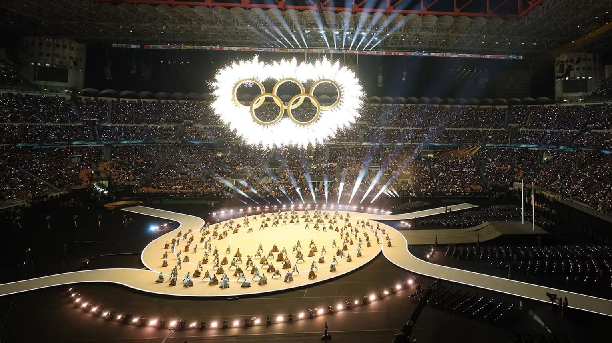

1
Какво представляват Олимпийските игри
Олимпийските игри са най-мащабното и престижно международно спортно събитие в света. Те се провеждат на всеки четири години и обединяват хиляди спортисти от над 200 страни и територии.
Игрите имат своите корени в Древна Гърция, където са се провеждали на всеки четири години в Олимпия в чест на бог Зевс. Съвременните Олимпийски игри са възродени от барон Пиер дьо Кубертен и за първи път се провеждат в Атина през 1896 г.
Основните ценности на олимпийското движение са изразени в девиза "Citius, Altius, Fortius - Communiter" (По-бързо, По-високо, По-силно - Заедно),който подчертава стремежа към спортно съвършенство и международно приятелство.
